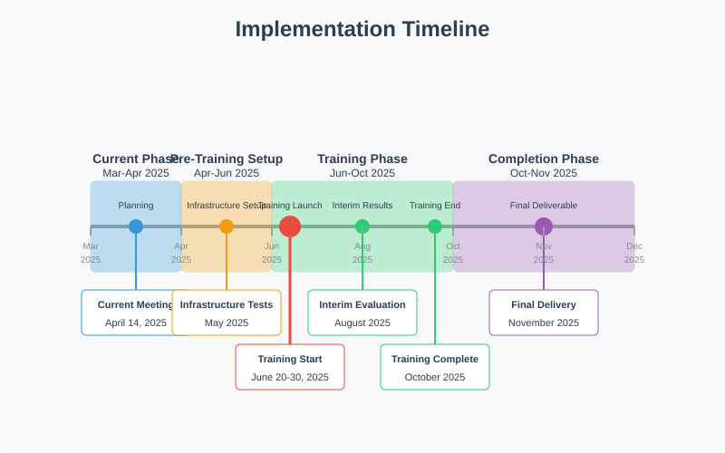
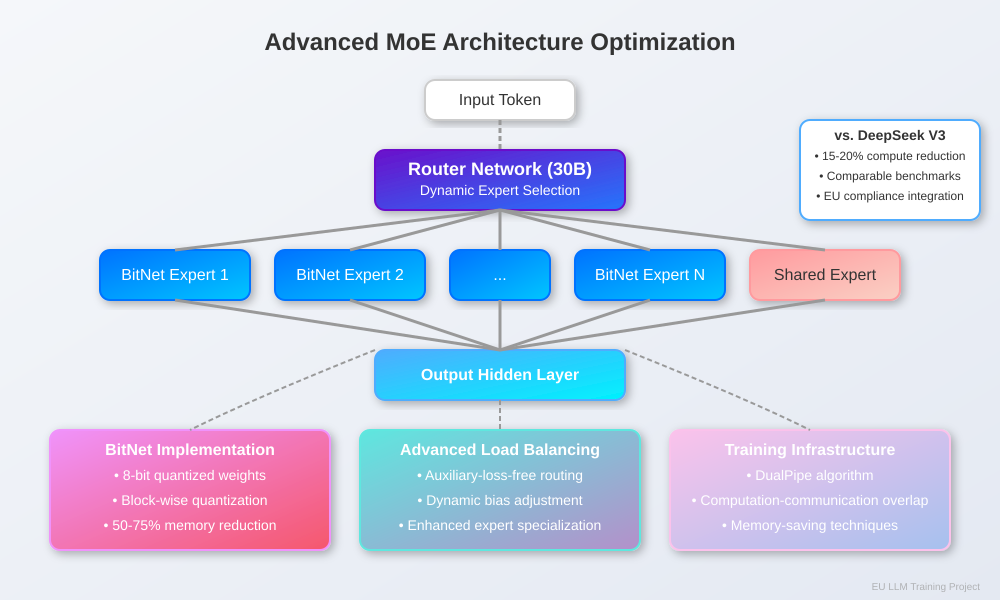
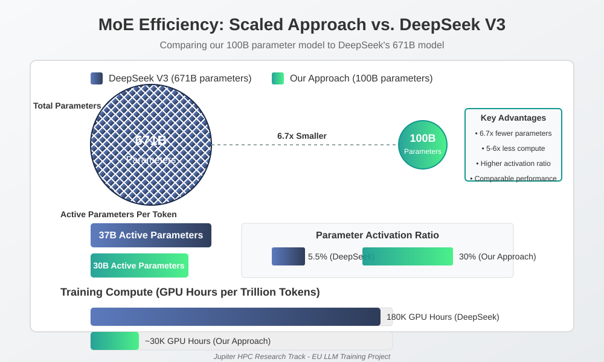
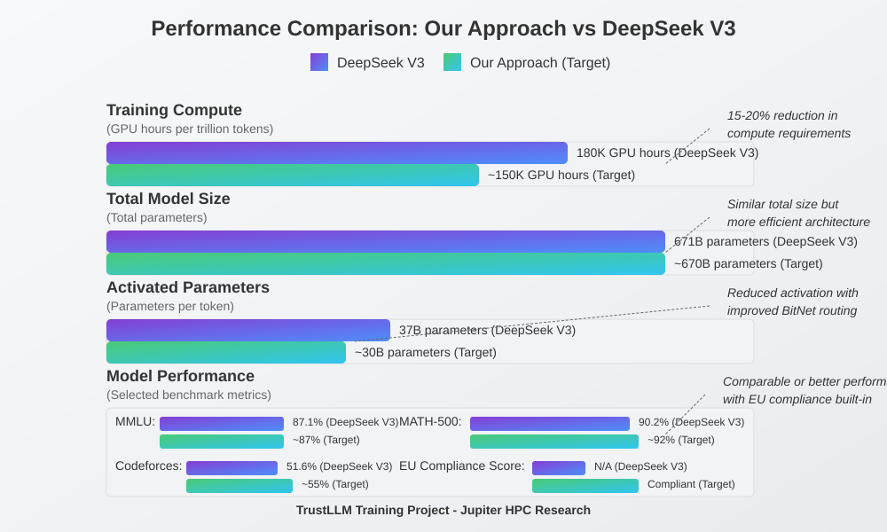
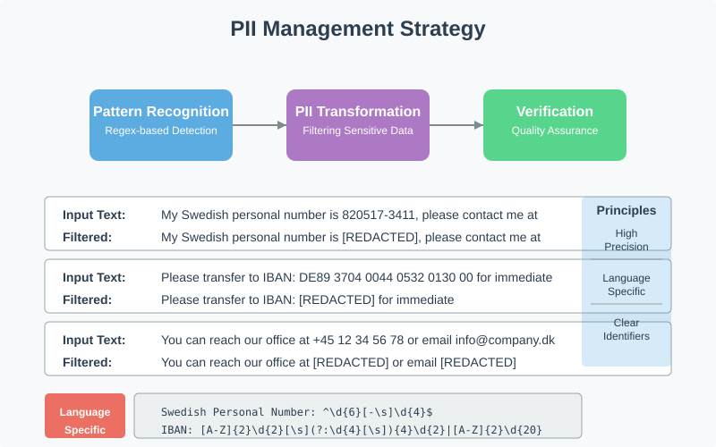
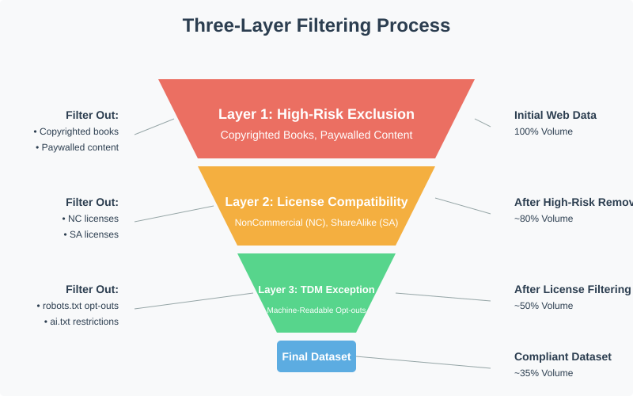

TrustLLM Training Project: Dual-Track Approach to Compliant Language Models
Dual Research Focus: Compliance-Performance Balance & Advanced Training Optimization









Swedish ID: ^\d{6}[-\s]\d{4}$
IBAN: [A-Z]{2}\d{2}[\s](?:\d{4}[\s]){4}\d{2}